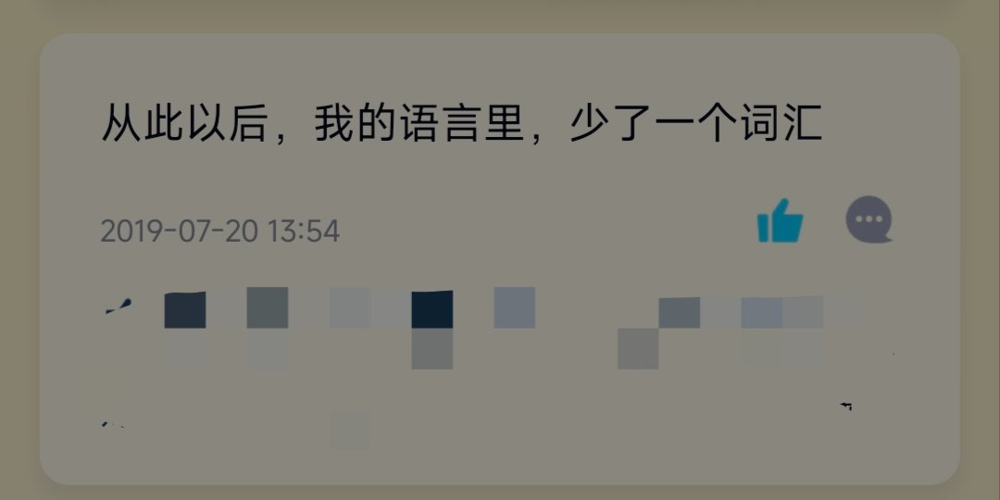

洛书瑶
@luoshuyao
所以我很讨厌烟，它夺去了我重要之人的生命，我的爷爷和外公都是因为肺癌去世的。我甚至都没见过爷爷。还有烟味真的很恶心，很难闻。

洛书瑶
@luoshuyao
记得那是高一升高二的暑假，当时我还在学校补课，我妈打电话过来说外公快不行了，让我回家看看他。然后我就去找班主任请假。那个时候我在办公室里向他苦苦哀求，他始终不愿意松口，说来说去只有“学习为重”这四个字。我只好乖乖回去上课。要是当时直接翘课该多好啊……可惜不会再有机会了。本来就剩最后 https://t.co/nfG2FyZ6ua https://t.co/eqqnnV8i3L